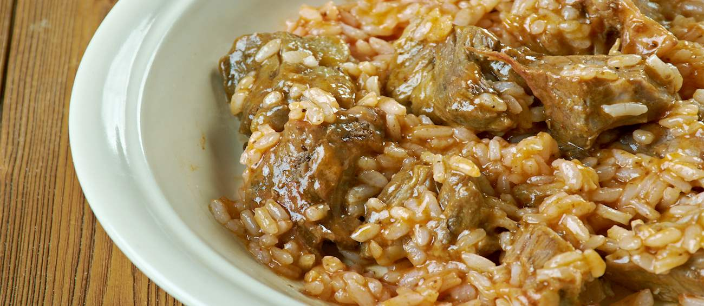

Cabidela

Cabidela is a Portuguese dish consisting of rice and poultry or game meat cooked together with
animal’s blood. Rice can be cooked alongside meat or served on the side, while red wine or vinegar are
sometimes
added to moderate the tartness.
With its unusual dark color and a creamy texture, cabidela is considered to be a Portuguese specialty, and
it is traditionally associated with various regions in Northern Portugal. It has also been integrated into
traditional Brazilian and Angolan cuisine.
Ingredients
- 1 onion
- 4 garlic cloves
- 1 whole chicken(preferably organic)
- Some slices of chorizo and prosciutto
- 300g of "carolino" rice(rice with smaller grains)
- 1 black beer(33cl)
- 4 tbsp olive oil
- 1 tbsp balsamic vineager
- 1 tbsp salt
- Pepper to taste
- Parsley
- 1 bay leaf
Steps:
- Prepare the chicken. As you will need to use the chicken’s blood, it’s best if you
get the chicken from a butcher, since they sell the blood on the side, already blended with red wine
vinegar. Even better would be to get it straight from a nearby farmer. In a supermarket, make sure that
they provide you with the chicken blood before you order it.
- Chop the chicken into small bite-sized pieces.
- Peel and chop the onion and the garlic cloves and fry them in a large pan with hot olive oil. Add the
chorizo and the prosciutto sliced very thin and keep stirring. Once the smoked meats and the onions are
getting a golden color, add the black beer and the balsamic vinegar.
- Add the chicken pieces, season with salt, pepper, parsley and a little bit of cinnamon (if you like, as
this is an optional spice) and let it cook for about 10 minutes over medium heat.
- Next, add the rice to the stock in which the chicken has been cooked. You might need to add some hot
water, depending on the amount of stock you have on the pan, so pay attention throughout the rice
cooking. Usually, carolino rice demands 3x the amount of water.
- When the rice is just about to be cooked add the blood and vinegar mixture that you got from the
supermarket. Mix well and simmer for 1-2 minutes. Remove the pan from the heat and serve immediately.
Back to top
Return